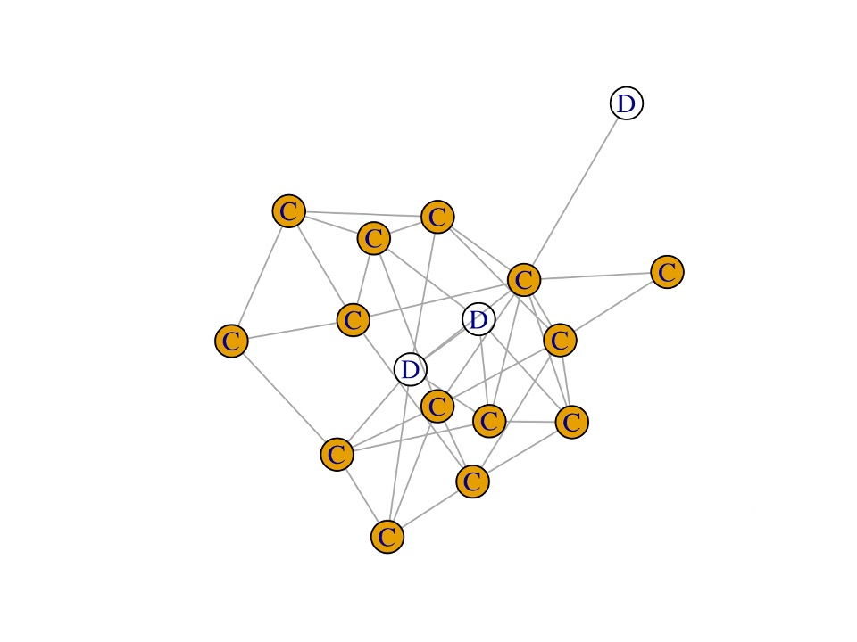
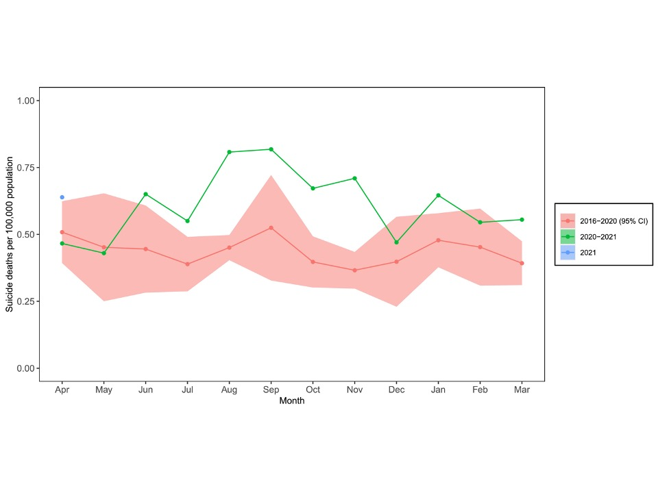

後藤 隆之介
小児科医・研究者
東京大学医学部附属病院と長野県立こども病院 の小児科医。英国・米国の小・中・高等学校を卒業し、2019年に東京大学医学部医学科卒業。
研究テーマはこどもの発達・健康・行動などの社会的決定要因（Social determinants of health）。機械学習やネットワーク科学など様々な手法を用いて、社会環境が健康に及ぼす影響とその改善方法を研究している。近年は戦争によって大きな影響を受けたウクライナにおけるこどものメンタルヘルスの調査やウクライナ政府と共同で児童精神科の医療サービスの構築にも携わる。原著論文はThe Lancet、JAMA Pediatrics、Pediatricsなど医学トップ誌に多数掲載。
主な研究業績
因果推論や機械学習、ネットワーク科学を用いた人間の行動や医療政策の研究
 Machine Learning Detects Heterogeneous Effects of Medicaid Coverage on Depression. Ryunosuke Goto, Kosuke Inoue, Itsuki Osawa, Katherine Baicker, Scott L. Fleming, Yusuke Tsugawa. American Journal of Epidemiology, in press.
機械学習を用いた因果推論の手法「因果フォレスト（causal forest）」を用い、米国の低所得者向け公的医療保険Medicaidのうつ病への効果の異質性を調査した。
Machine Learning Detects Heterogeneous Effects of Medicaid Coverage on Depression. Ryunosuke Goto, Kosuke Inoue, Itsuki Osawa, Katherine Baicker, Scott L. Fleming, Yusuke Tsugawa. American Journal of Epidemiology, in press.
機械学習を用いた因果推論の手法「因果フォレスト（causal forest）」を用い、米国の低所得者向け公的医療保険Medicaidのうつ病への効果の異質性を調査した。
 Using social network analysis for prevention of social isolation. In progress. 社会孤立のメカニズムとその予防方法を、社会ネットワーク実験を用いて研究している。
社会経済的因子の発達・健康・行動への影響の研究
War is a Public Health Emergency. Ryunosuke Goto, Anthony P. S. Guerrero, Mario Speranza, Daniel Fung, Campbell Paul, Norbert Skokauskas. The Lancet, 2022. 戦争がこどもの発達や健康に及ぼす影響について言及した。

Adolescents of Ukraine during the Russian Invasion (AUDRI) Project. Study Protocol: Adolescents of Ukraine During the Russian Invasion (AUDRI) Cohort. Ryunosuke Goto, Irina Pinchuk, Oleksiy Kolodezhny, Nataliia Pimenova, Norbert Skokauskas. BMC Public Health, 2023. 戦争がウクライナのこどものメンタルヘルスに及ぼす影響を大規模コホートを構築中。調査結果に基づき、ウクライナの児童精神科医療サービスの構築をおこなっている。小児医学研究振興財団、チェルノブイリ・福島医療基金より研究助成金をいただいています。

Armed Conflict and Early Childhood Development in 12 Low- and Middle-Income Countries. Ryunosuke Goto, Thomas Frodl, Norbert Skokauskas. Pediatrics, 2021. 2万人以上のこどもの大規模データを使い、戦争が3-4歳児の発達（特に社会情緒的発達）に悪影響を及ぼすことを示した。

Trends in Obesity Among US Adolescents by Socioeconomic Status, 1999-2018. Ryunosuke Goto, Roch Nianogo, Yusuke Okubo, Kosuke Inoue. JAMA Pediatrics, 2022. 米国における肥満の経済格差が増大傾向にあることを示した。
 Reasons and trends in youth’s suicide rates during the COVID-19 pandemic. Ryunosuke Goto, Yusuke Okubo, Norbert Skokauskas. The Lancet Regional Health – Western Pacific, 2022. コロナ禍において日本の若者の自殺が増えたことを示した。
 Contribution of Vaccinations to Reducing Socioeconomic Disparities in COVID-19 Deaths Across US counties. Ryunosuke Goto, Ichiro Kawachi, Naoki Kondo, Kosuke Inoue. Annals of Epidemiology, in press.
新型コロナウイルスのワクチン接種により、米国の新型コロナ死亡率の社会経済格差が縮小できる可能性を示した。
Contribution of Vaccinations to Reducing Socioeconomic Disparities in COVID-19 Deaths Across US counties. Ryunosuke Goto, Ichiro Kawachi, Naoki Kondo, Kosuke Inoue. Annals of Epidemiology, in press.
新型コロナウイルスのワクチン接種により、米国の新型コロナ死亡率の社会経済格差が縮小できる可能性を示した。
学会発表・講演
Machine Learning Detects Heterogeneous Effects of Medicaid on Depression: Oregon Health Insurance Experiment. Ryunosuke Goto, Kosuke Inoue, Itsuki Osawa, Katherine Baicker, Scott L. Fleming, Yusuke Tsugawa. Oral presentation, Society for Epidemiologic Research (SER) Annual Meeting, 2023.
Social network analysis and network interventions in society, human development, and health research. Ryunosuke Goto, Akihiro Nishi. Invited talk, Eunice Kennedy Shriver National Institute of Child Health and Human Development (NICHD) Social and Behavioral Sciences Branch Seminar Series, 2022.
Armed Conflict and Early Childhood Development in 12 Low- and Middle-Income Countries. Ryunosuke Goto, Thomas Frodl, Norbert Skokauskas. Oral presentation, American Academy of Pediatrics (AAP) National Conference and Exhibition, 2021. [論文および解説動画]
Effects of comorbid Tourette symptoms on distress by compulsive-like behavior in very young children. Ryunosuke Goto, Miyuki Fujio, Natsumi Matsuda, Mayu Fujiwara, Norbert Skokauskas, Yukiko Kano. Oral presentation, 24th World Congress of the International Association for Child and Adolescent Psychiatry and Allied Professions (IACAPAP), 2020. [論文]
社会共通資本としての医療：グローバルに支える. 後藤隆之介. 招待講演, 日経SDGsフォーラム, 2019. [プログラム]
Dissemination and implementation of the e-MCH Handbook, the potential role of m-Health in improving health equity in a refugee setting: A cross-sectional study. Ryunosuke Goto, Seif Nasir, Akiko Kitamura, Majed Hababeh, Ghada Ballout, Junko Kiriya, Akihiro Seita, Masamine Jimba. Oral presentation, American Public Health Association (APHA) Annual Meeting, 2018. [論文]
受賞歴
Society for Epidemiologic Research（米国・疫学研究学会） Kenneth Rothman Travel Scholarship, 2023
ウクライナ精神医学会 Stanislav Kostyuchenko Award, 2023
東京大学医学部附属病院小児科研究奨励賞, 2022
国際児童青年精神医学会 Donald J. Cohen Fellowship Program for International Scholars in Child and Adolescent Mental Health, 2020
東京大学医学部学部長賞, 2018
公益財団法人ピジョン奨学財団奨学金, 2017-2019